Westcoast Bash 2011
Well, the day has finally come. Westcoast Bash is finally here, and in typical Westcoast Bash fashion, it totally kicked ass.
Come on Six Flags!!! Let us in and begin Westcoast Bash!!!! We've been waiting all year for this!!!
Just like in previous years, Westcoast Bash has kickass doughnuts for us to fuel up on.
"America may have all sorts of incredibly fatty and unhealthy foods, but they have nothing on my Doughnut Sandwich!!!!"
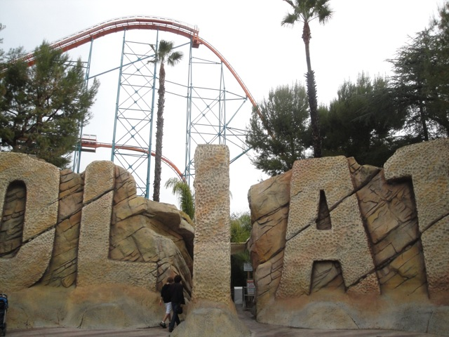
All right. That's enough food for now. Let's get riding!!!
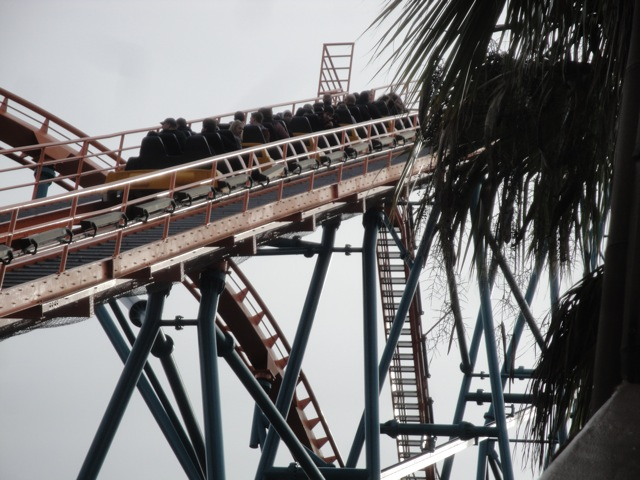
Aww. Goliath's stuck. Moving on.
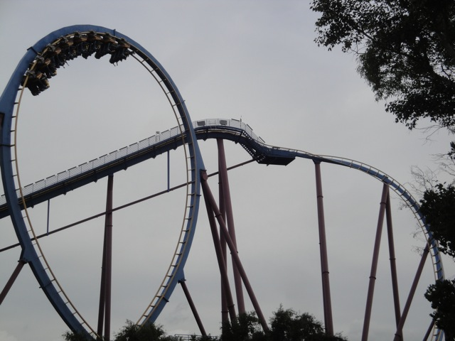
While I thought this years Morning ERT wasn't quite as good as it was in previous years. But hey, Night ERT was one of the best ever and even less than average WCB Morning ERT still kicks total ass.
"Are you my mother?"
What's wrong with this picture?
 All right. Now we're getting to the really good stuff.
All right. Now we're getting to the really good stuff.
"Dude. I've got doughnuts and X2. This day is already f*cking amazing."
Ahh. This is how ERT should be.
Green Lantern Construction Update. Still looks like a clone of Dirt the ride.
All right. Now that Morning ERT is over, it's time for a backstage tour of one of Six Flags Magic Mtn's Fright Fest Mazes, Bite II. (Yes, Westcoast Bash is that awesome.)
While it isn't one of my favorite Fright Fest mazes, I'm just glad to see it behind the scenes instead of seeing it in maze forms like I saw in Fright Fest.
"Blugh. There's too much moss in here."
Get over it you big baby.
"Antonio, is that you?"
"No. We fired him. I found out that I'm much scarier than Antonio and will be in Bite II from now."
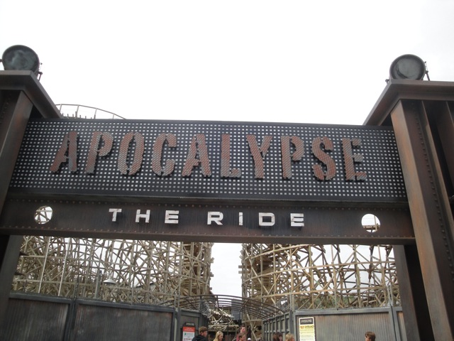
In other news, Apocolypse finally got its permanent sign, and it's much better than the old sign.
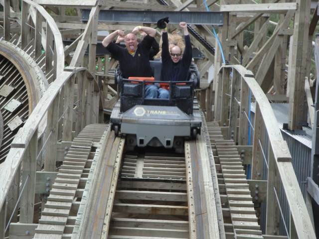
Hey Big Mike! How's it going!?
All right. Time for Westcoast Bash Lunch.
HOLY CRAP!!!! THAT'S THE LINE TO GET A Q-BOT!!!!? Luckily we have Westcoast Bash or we'd be screwed.
Well, Thomas Town has officially made the transition to Whistlestop Park.
Of all the names they could've came up with, they ended up going with Magic Flyer. Something about that being a name for a kiddy coaster just doesn't seem right.
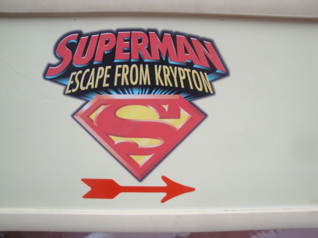
Nice. They already put the new Superman Logo on the signs.
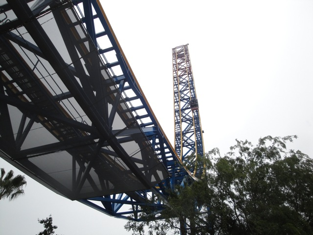
Oh yeah. Today is also offically Backwards Superman's Opening Day. No wonder it's so damn crowded.
Take a good look at this sign because Grinders Gearworks won't be called Grinders Gearworks for long.
Ugh. Why are we riding Tidal Wave in this type of weather?
 Yeah. That's more of the types of rides we should be riding.
Yeah. That's more of the types of rides we should be riding.
 While it may look like we're screwed here, we're not thanks to the fact that groups like this are f*cking idiots. =) "WHAT DO YOU MEAN WE HAVE TO SPLIT UP!!!! THAT WAS NEVER PART OF THE DEAL!!!!! WE WOULD RATHER DIE THAN SPLIT UP WITH OUR PRECIOUS GROUPS!!! THEY ARE MORE IMPORTANT THAN BREATHING, EATING, AND DRINKING PUT TOGETHER!!!!!!!"
While it may look like we're screwed here, we're not thanks to the fact that groups like this are f*cking idiots. =) "WHAT DO YOU MEAN WE HAVE TO SPLIT UP!!!! THAT WAS NEVER PART OF THE DEAL!!!!! WE WOULD RATHER DIE THAN SPLIT UP WITH OUR PRECIOUS GROUPS!!! THEY ARE MORE IMPORTANT THAN BREATHING, EATING, AND DRINKING PUT TOGETHER!!!!!!!"
All right. Time for yet another kickass Westcoast Bash Backstage Tour.
 This year, we got a Goliath Backstage Tour and it was awesome.
This year, we got a Goliath Backstage Tour and it was awesome.
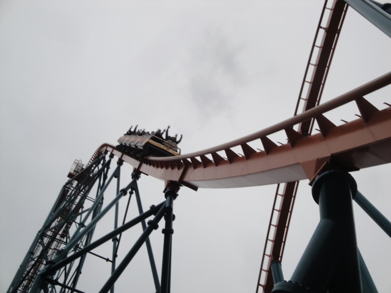
Dude. This shot kicks major major major ass.
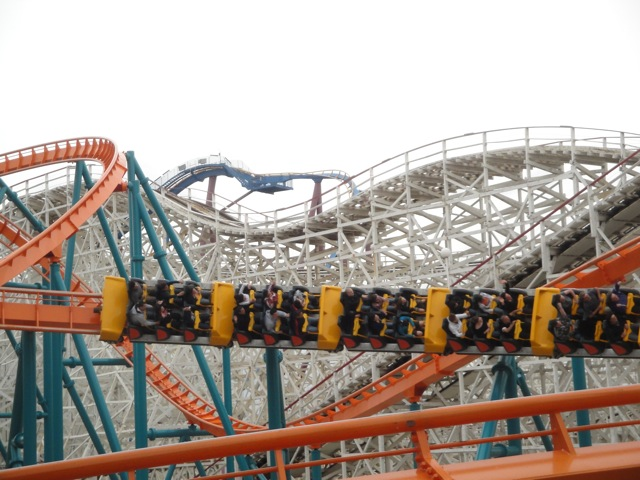
Fake Helix of Death!!!!!
 Dude. These Goliath shots are worth the WCB price alone.
Dude. These Goliath shots are worth the WCB price alone.
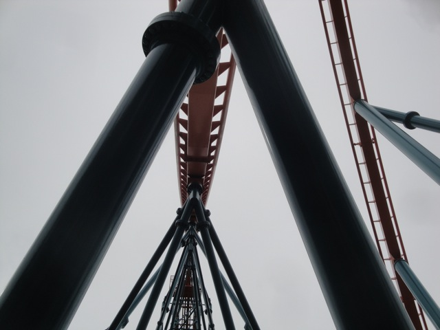
Goliath Crotch Shot.
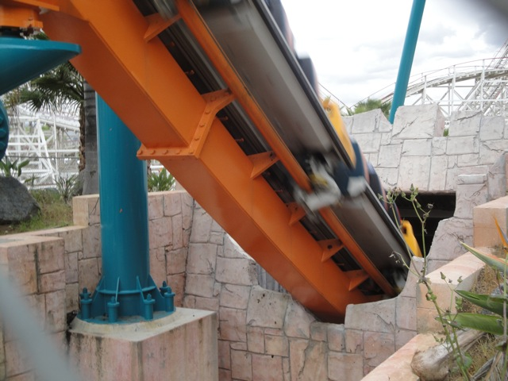
Hmm. I see a long object going into a small dark hole.
 Goliath Backstage Tour Awesomeness.
Goliath Backstage Tour Awesomeness.
Meh. Whatever. It's not like you get wet on this ride or anything.
All right. Time for the annual WCB Q&A Session.
Could they possibly be foreshadowing Revolution's future here?
 "Happy Birthday Kid at Westcoast Bash. Here's a tube from SFMM."
"Happy Birthday Kid at Westcoast Bash. Here's a tube from SFMM."
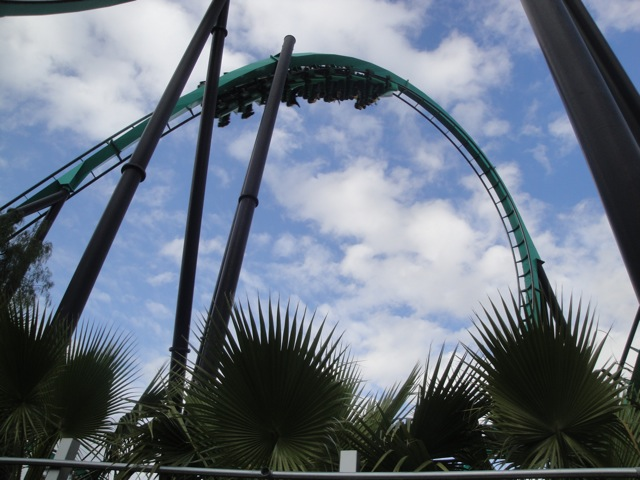
Dude!!! Riddlers Revenge was hauling ass today!!! I mean, it was good. Really f*cking good. In fact, I can't remember the last time Riddlers Revenge ran this well.
Yep. This is opening day all right.
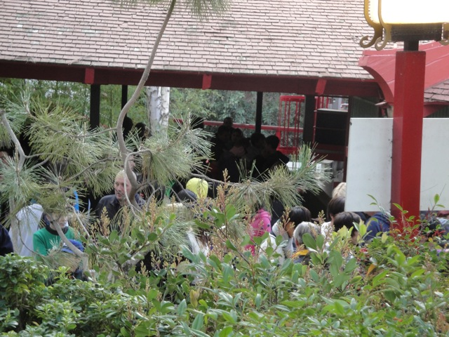
WHY THE F*CK HAS NINJA BEEN SO CROWDED THIS YEAR!!!? DID THE GP REALLY JUST DISCOVER THAT SUSPENDED COASTERS ARE RARE, SO NOW THEY'RE ALL RIDING NINJA?
 Wow. It looks like they really took my advice and just literally turned Grad Nite 2010 into Grad Nite 2011.
Wow. It looks like they really took my advice and just literally turned Grad Nite 2010 into Grad Nite 2011.
Umm, where is most of the Sky Tower Museum?
"Don't worry. Tim and Neal said that they're just adjusting the Sky Tower Museum. It's here to stay."
Don't worry. Nothing can possibly go wrong here. I've always had wonderful luck putting my camera on trash cans in the past. Oh, and I have great luck with my cameras on basketball courts as well.
It's cold, cloudy, and going to rain tonight. This sounds like the perfect day to go on Roaring Rapids.
Yeah. We're f*cking idiots.
Dude. Screw the Doughnuts, ERT, Backstage Tours, and Q&A. Finding this dime was the real highlight of Westcoast Bash.
Dude. What happened to the sofas in Studio 6F?
I've been seeing this ad for the Guacomole Burger for like forever. So I finally tried it, and it was actually pretty decent.
Yeah, yeah, yeah. We're sad and pathetic and we know it. Moving on.
Damn. Night ERT is started and they still have to weed out the GP from the lines. DAMN!!!! It was crowded today.
 Wait a minute. What's going on here?
Wait a minute. What's going on here?
Yep. It's raining during Night ERT. This is going to make for some very fun rides.
Ahh. That's much better.
This year, they turned Scream into Night Strobe Scream. While it wasn't really much, at least they tried doing something with it. (Plus, this isn't the only thing they did during our Night ERT. ;) )
 Hmm. What's up with all the smoke rising up from Batman?
Hmm. What's up with all the smoke rising up from Batman?
Dude!!! They added fog and blue lights to Batman!!!! And it totally kicked ass and made it much better!!!! =)
 Batman the ride through the fog and blue lights.
Batman the ride through the fog and blue lights.
This kicked ass!!!! Please do this with Batman more often! =)
 All right!!!! We got Night Time ERT on Superman!!!!!!
All right!!!! We got Night Time ERT on Superman!!!!!!
Hell, they were still running it despite the drizzle!!! And that kicked ass even if it did hurt like hell going back forewards!!!! We got many Superman rides in until they had to close it due to the rain getting harder.
Dude. Tatsu in the rain is awesome.
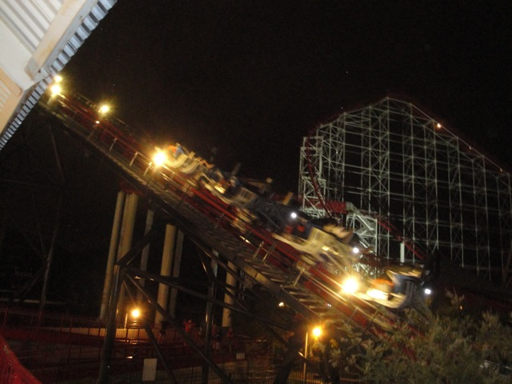
Oh, and for X2, they had a special WCB Soundtrack just like they did for Apocolypse last year.
Damn. X2 with WCB Soundtrack is really popular.
X2 with WCB Audio kicked ass and Westcoast Bash 2011 kicked ass. I'm totally looking foreword to Westcoast Bash 2012.
Home